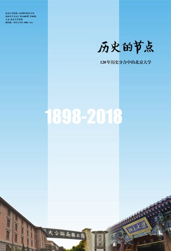
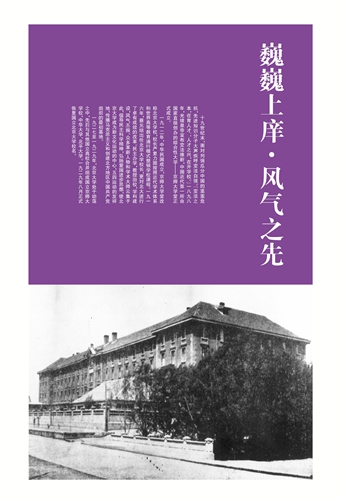
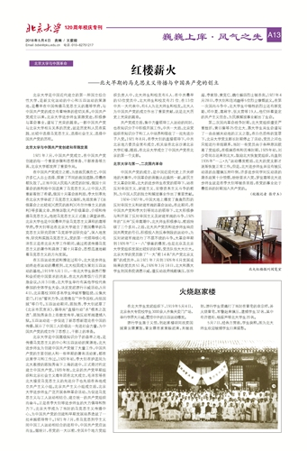
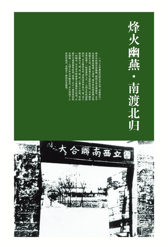
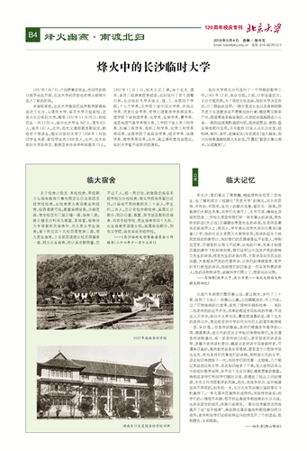
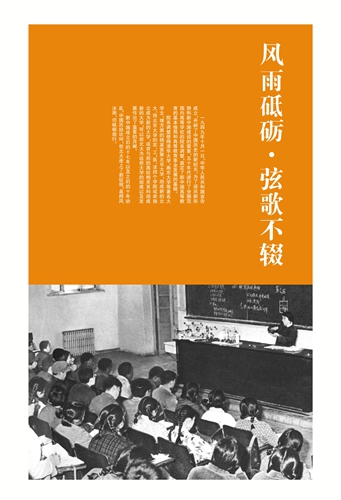
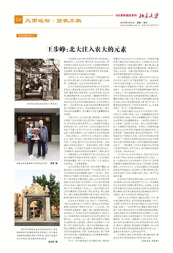
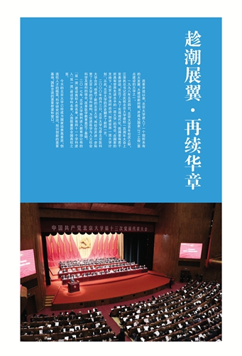
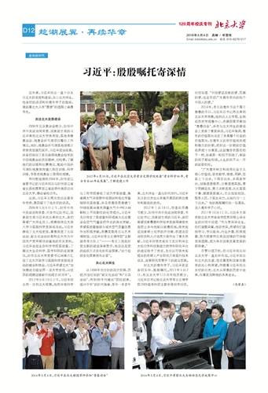

扫一扫，关注我们
册在手，纵览百年历史，展示时代新貌。近日《北京大学校报》编辑部特推出80版《历史的节点》校庆专刊，并向校内师生发放。
据介绍，这册专刊不同于以往的是，在重要的历史节点处和当代重大的历史时刻，不惜篇幅展开，以期给读者对校史留下深刻的印象，厘清模糊的认识。所以名为《历史的节点》。
这册专刊的副标题：“120年历史分合中的北京大学”，以北大120年的发展进程为脉络顺次讲述。北大120年的历史，不是单线发展起来的，它经历过停办，经历过与兄弟高校的多次分合。在历史的分合中，北大既有分出也有合入：分出，促进了其他高校的发展；合入，汇流了众家之长，才有了北大今天的繁荣。本册专刊的内容主要涉及京师大学堂初创、上世纪20年代的合校风波、1952年院系调整、创建世界一流大学和启动“双一流”建设等学校发展史上的关键时刻，细致讲述，展示北京大学如同一条奔流的大河，是如何分流、汇入，如何经历曲折与坦途，一路浩浩汤汤、奔涌向前的。

专刊分为以下四个部分。
第一部分：巍巍上庠·风气之先
1898年，光绪皇帝宣布变法维新，中国近代第一所由国家直接创办的综合性大学——京师大学堂正式成立。1912年，中华民国成立，京师大学堂改称北京大学校。1916年，蔡元培出任北京大学校长，对北大进行了卓有成效的改革。众多革新人物和学术大师云集于此，倡导民主科学精神，弘扬爱国进步思想，使北京大学成为新文化运动的中心、五四运动的发祥地、传播马克思主义和创建北方地区中国共产党组织的最初基地。


第二部分：烽火幽燕·南渡北归
复校后的北京大学，因日军全面侵华、北平沦陷而被迫南渡，与清华大学、南开大学两校组成国立西南联合大学，在保留文化血脉的同时，为中国学术界培养了一批优秀的人才。1945年，抗战胜利后，北大复员北归，其所设学科由文、理、法三院发展为文、理、法、医、农、工等六个学院。在这一时期中，北大学子积极参与爱国民主运动，从游行示威到参军抗战，延续了北京大学一直以来的民主精神。


第三部分：风雨砥砺·弦歌不辍
1949年，中华人民共和国成立，开辟了历史新纪元。为适应新中国建设的需要，50年代全国范围内高等学校的院系调整，奠定了新中国高等教育的基本格局和高等教育事业发展的基础。院系调整使清华大学、燕京大学等大学文、理方面的精英荟聚北京大学，组成新的北大。而北京大学的农、工、医、法四个学院或者独立成为新的大学，或者与其他高校相关系科组成新的大学，为这些大学的组建以及发展作出了重要贡献。


第四部分：趁潮展翼·再续华章
百年校庆之际，在国家大力支持下，北京大学适时启动“创建世界一流大学计划”，学校的历史翻开了崭新的一页。2000年，北京大学与原北京医科大学合并，组建了新的北京大学。2017年，北大进入教育部公布的“双一流”建设高校A类名单，并有41个学科进入“双一流”建设学科名单，入选数量居全国高校之首。今天，北大已成为国家培养高素质、创造性人才的摇篮，科学研究的前沿，知识创新的基地，国际交流的桥梁和窗口。


本专刊旨在为校内提供一本既浓缩历史、又生动可读的读物，同时作为校报编辑部迎接120周年校庆的一项重要工作。专刊尽可能以文献和学者的研究还原北京大学的历史概貌，以当事人回忆的形式展示各个时代的鲜活画面。
校报编辑部表示，专刊按正常的发放途径，将发放到校内行政、院系教师和学生宿舍。如有个别需求，可到校报办公室领取。
扫一扫，关注我们